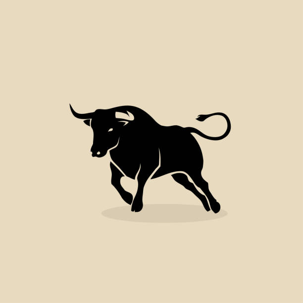

The Bull
In the heart of a bustling city, "the bull" was known as the most cunning and fearless spy in the business. With his muscular build and quick thinking, he earned his nickname by charging headfirst into dangerous missions without hesitation. One day, "the bull" received intel about a highly encrypted hard drive that contained sensitive information about Ziggler's criminal empire. It was rumored to be hidden in Ziggler's heavily guarded mansion on the outskirts of the city. Determined to retrieve it, "the bull" devised a meticulous plan. Under the cover of darkness, "the bull" infiltrated the mansion, utilizing his expert lock-picking skills to bypass the security systems. He moved silently through the opulent halls, avoiding the watchful eyes of Ziggler's henchmen. As he neared Ziggler's office, "the bull" encountered a laser grid blocking his path. With his agility and precision, he maneuvered through the lasers, avoiding detection. Finally, he reached the office where the hard drive was rumored to be kept. Inside the office, "the bull" found a state-of-the-art safe. With his knowledge of advanced technology, he quickly cracked the code and opened the safe. There it was, the coveted hard drive. But just as he was about to make his escape, an alarm blared throughout the mansion. Ziggler's men were onto him! "The bull" knew he had to act fast. He grabbed the hard drive and sprinted towards the nearest exit. As he raced through the mansion, he encountered a series of obstacles: guards, booby traps, and even attack dogs. But "the bull" used his strength and agility to overcome each challenge, leaving his pursuers in the dust. Finally, he reached the getaway vehicle he had prepared earlier—a sleek black sports car. With the hard drive safely in his possession, "the bull" revved the engine and sped away, leaving Ziggler's men in his wake. Back at his secret hideout, "the bull" accessed the hard drive and discovered a treasure trove of incriminating evidence against Ziggler and his criminal organization. He knew this information would bring them down once and for all.

The Bull
Action · 4 months ago